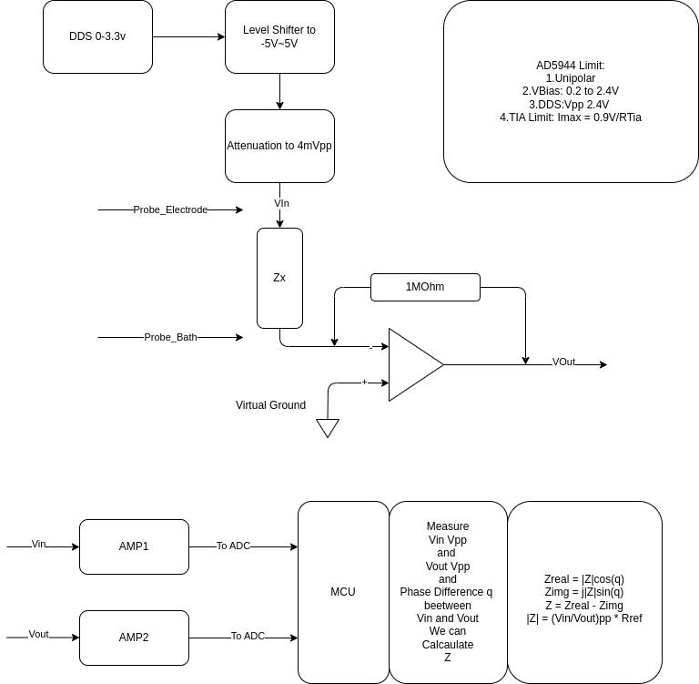
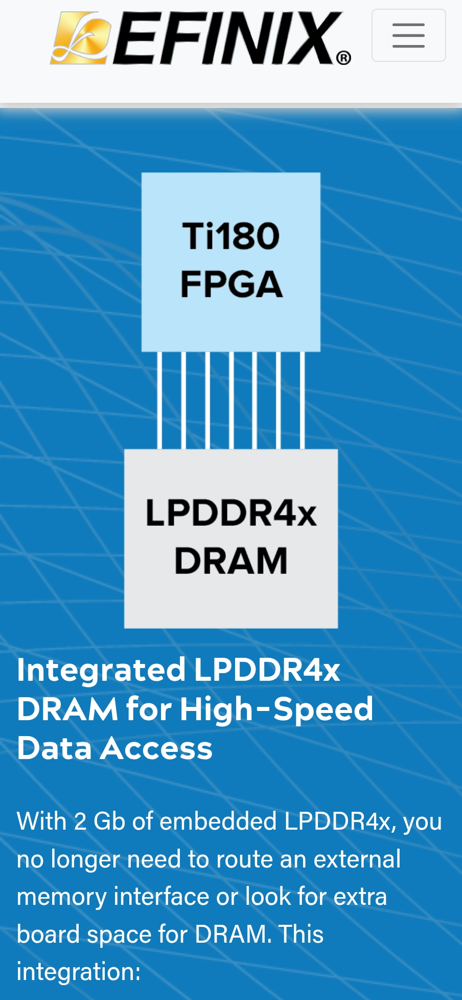

2025-04
2025-04-30
Understanding the Key Differences: A Comprehensive Comparison of Xilinx FPGA Families
A Comprehensive Comparison of Xilinx FPGA Families
Z Impedance Measurement

LTSpice Tutorial
2025-04-29
HeadStage Probe Impedance Measuement

Introduction of AC Impedance basics
Introduction of AC Impedance basics

Probe Electrode and Probe Bath 2 Node

TIA and Auto-Balance Bridge


Multi-channel_impedance_analyzer use AD5933
Multi-channel_impedance_analyzer
Measuring Impedance and Capacitance with an Oscilloscope and Function Generator
No FFT Needed


Measuring Impedance and Capacitance with an Oscilloscope and Function Generator
2025-04-25
LLMs Coming For A DNA Sequence Near You
LLMs Coming For A DNA Sequence Near You
2025-04-24
Modern_monetary_theory
Central banks manage liquidity by buying and selling government bonds on the open market. When excess reserves are in the banking system, the central bank sells bonds, removing reserves from the banking system, because private individuals pay for the bonds. When insufficient reserves are in the system, the central bank buys government bonds from the private sector, adding reserves to the banking system.
MMT economists also say quantitative easing (QE) is unlikely to have the effects that its advocates hope for.[72] Under MMT, QE – the purchasing of government debt by central banks – is simply an asset swap, exchanging interest-bearing dollars for non-interest-bearing dollars. The net result of this procedure is not to inject new investment into the real economy, but instead to drive up asset prices, shifting money from government bonds into other assets such as equities, which enhances economic inequality. The Bank of England's analysis of QE confirms that it has disproportionately benefited the wealthiest.[73]
MMT economists say that inflation can be better controlled (than by setting interest rates) with new or increased taxes to remove extra money from the economy.[5] These tax increases would be on everyone, not just billionaires, since the majority of spending is by average Americans.[5]
Unpacking "The Deficit Myth" by Stephanie Kelton | Modern Monetary Theory (MMT)
The Hong-Ou-Mandel Effect
2025-04-23
Spice ngspice
Wiki App
2025-04-21
STM32 FFT and DDS
2025-04-18
Chisel Arbiter


Orange-Pi-RV2

Adafruit_AHRS from 9 Axis Data
2025-04-16
Not able to read absolute orientation (tilt) using DMP
Not able to read absolute orientation (tilt) using DMP
Chisel Decouple and Queue


Chisel Flow

2025-04-15
MUI Board
STM32 & ICM-20948 IMU sensor
STM32 & ICM-20948 IMU sensor Video
Conversion_between_quaternions_and_Euler_angles
Conversion_between_quaternions_and_Euler_angles
2025-04-14
SparkFun ICM-20948 Arduino Library <----
Need to change the memcpy_P to memcpy
add #include <string.h>
double q1 = ((double)data.Quat6.Data.Q1) / 1073741824.0; // Convert to double. Divide by 2^30
double q2 = ((double)data.Quat6.Data.Q2) / 1073741824.0; // Convert to double. Divide by 2^30
double q3 = ((double)data.Quat6.Data.Q3) / 1073741824.0; // Convert to double. Divide by 2^30
double q0 = sqrt(1.0 - ((q1 * q1) + (q2 * q2) + (q3 * q3)));
double qw = q0; // See issue #145 - thank you @Gord1
double qx = q2;
double qy = q1;
double qz = -q3;
// roll (x-axis rotation)
double t0 = +2.0 * (qw * qx + qy * qz);
double t1 = +1.0 - 2.0 * (qx * qx + qy * qy);
double roll = atan2(t0, t1) * 180.0 / PI;
// pitch (y-axis rotation)
double t2 = +2.0 * (qw * qy - qx * qz);
t2 = t2 > 1.0 ? 1.0 : t2;
t2 = t2 < -1.0 ? -1.0 : t2;
double pitch = asin(t2) * 180.0 / PI;
// yaw (z-axis rotation)
double t3 = +2.0 * (qw * qz + qx * qy);
double t4 = +1.0 - 2.0 * (qy * qy + qz * qz);
double yaw = atan2(t3, t4) * 180.0 / PI;
2025-04-11
Calibrate Magnatic Sensor
improved-magnetometer-calibration
calibrating-any-compass-or-accelerometer-for-arduino
Matlab about Sensor Fusion
Matlab about Kalman Filter
2025-04-10
Efinix FPGA embedded with 2Gb DDR

2025-04-09
ICM_20948 Calibration
How LLM Think ?
Tracing the thoughts of a large language model
On the Biology of a Large Language Model
2025-04-08
FrontPanel 6.0 Public Beta
With FrontPanel 6 we’re introducing the ability to develop FrontPanel-powered Electron apps.
Enginursday: Open Ephys 2014 @ Sparkfun
2025-04-07
Chisel 2025
CSE 228A - Agile Hardware Design, Spring 2025, UC Santa Cruz
Agile Hardware Design Course Lectures
Transputer Emulator
Bambu: A Free Framework for the High-Level Synthesis HLS of Complex Applications
Bambu: A Free Framework for the High-Level Synthesis (HLS) of Complex Applications Bambu is a free framework aimed at assisting the designer during the high-level synthesis of complex applications, supporting most of the C constructs (e.g., function calls and sharing of the modules, pointer arithmetic and dynamic resolution of memory accesses, accesses to array and structs, parameter passing either by reference or copy, …). Bambu is developed for Linux systems, it is written in C++11, and it can be freely downloaded under GPL license.
Adafruit MAX17048 LiPoly / LiIon Fuel Gauge and Battery Monitor
LTC4150 Coulomb Counter Hookup Guide
LTC4150 Coulomb Counter Hookup Guide
Battery Gas Gauge LTC2959


NJW4119 Raspberry Pi Battery

Performant Rust Webserver on a Low-Cost FPGA use Arty A7
Performant Rust Webserver on a Low-Cost FPGA
2025-04-02
RAH Protocol User Guide (efinix FPGA Mipi to Linux SBC)
The RAH (Real-time Application Handler) protocol is designed to facilitate the transfer of data between a CPU and an FPGA, developed by Vicharak. It enables the CPU to run various applications that send data to the FPGA. The RAH Services encapsulate the data into distinguishable data-frames identified by an app_id and deliver these frames to the FPGA. On the FPGA side, the RAH design decodes the data and writes it to the corresponding APP_WR_FIFO. Similarly, during the read cycle, the FPGA writes data into APP_RD_FIFO, which is then encapsulated and delivered back to the CPU where it gets decoded.
Generate your own RPI Image
rpi-image-gen is a tool used to create custom software images for Raspberry Pi devices. rpi-image-gen runs best on a Raspberry Pi Host running up-to-date 64-bit Raspberry Pi OS.
2025-04-01
9 Axis get better Yaw Estimation

UVC Isochronical Data Size USB USB2 USB3
1024x 3 x 8000 USB2
1024x 48 x 8000 USB3 Gen1
1024x 96 x 8000 USB3 Gen2


Understanding why USB Isochronous Bandwidth Errors Occur
Gryro Offset is also not stable
Same measure different time.


Yaw Drift
Without Gyro Calibration 3degree/Second

With Gryo Calibration 0.3degree/Second